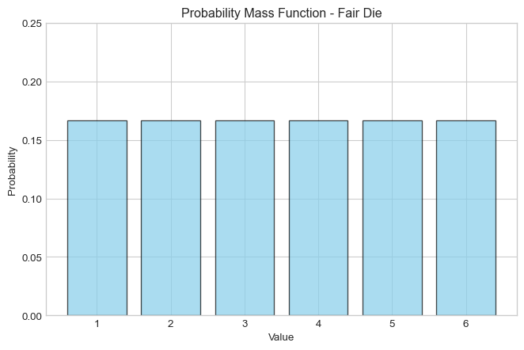
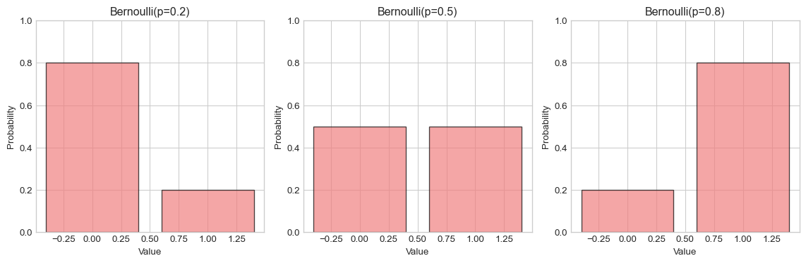
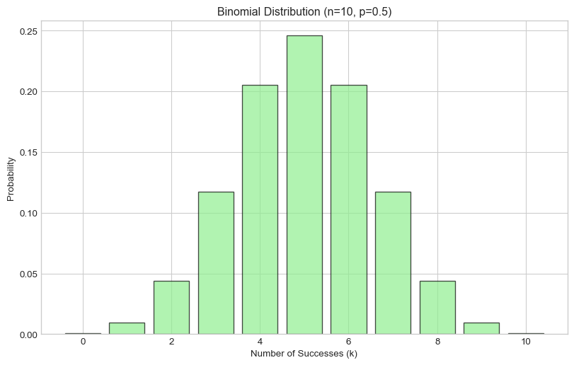
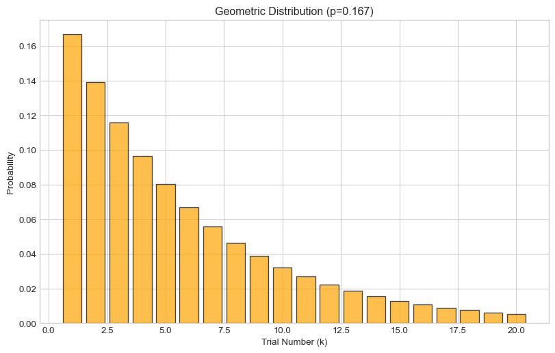
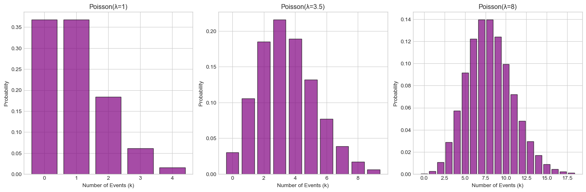
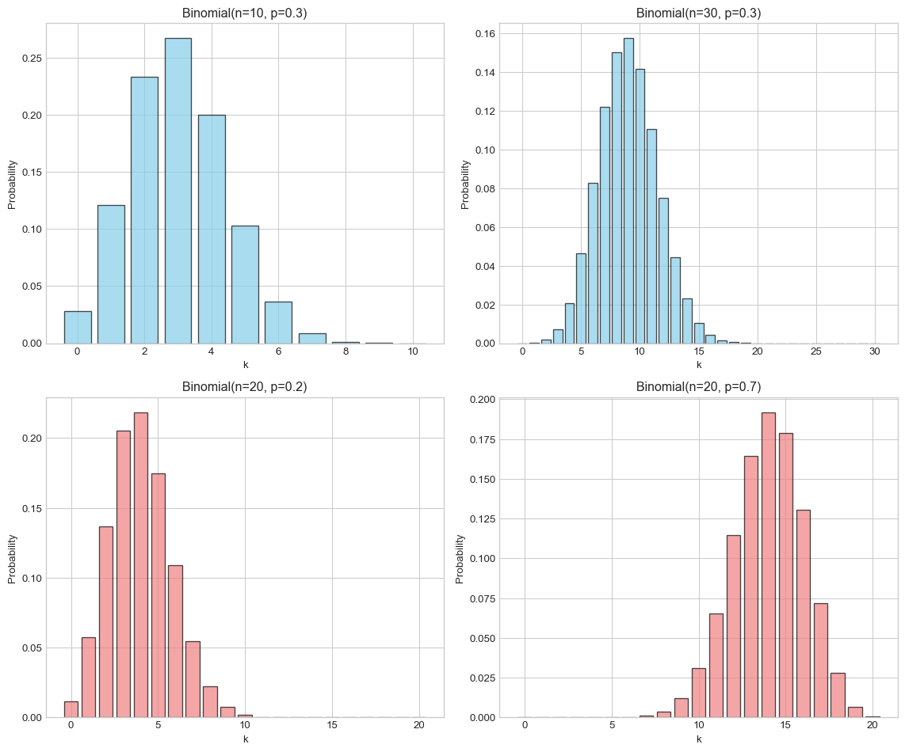
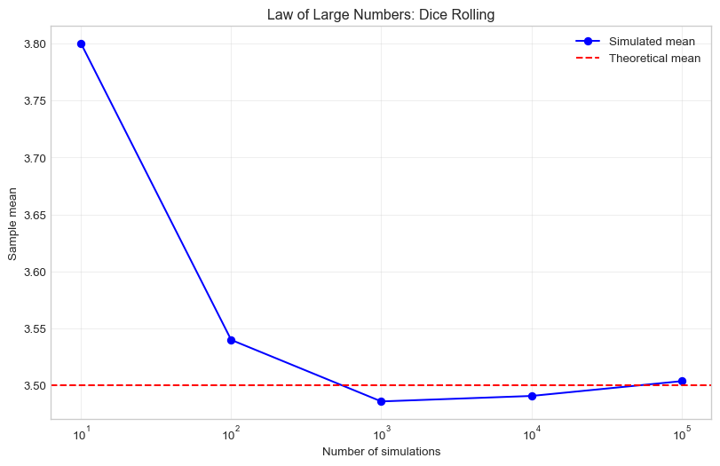

import numpy as np
import matplotlib.pyplot as plt
from scipy import stats
import pandas as pd
# Set up plotting
%matplotlib inline
plt.style.use('seaborn-v0_8-whitegrid')Lab 4: Discrete Random Variables and Distributions
PSTAT 5A - Summer Session A 2025

Welcome to Lab 4! Today we’ll explore discrete random variables and probability distributions using Python. We’ll learn how to calculate probabilities, expected values, and visualize different distributions.
Setup and Required Modules
⏱️ Estimated time: 3 minutes
Before we begin working with probability distributions, let’s import the necessary modules:
Note
We’re introducing a new module today: scipy.stats. This module contains many statistical functions and probability distributions that we’ll use extensively.
Introduction to Random Variables
⏱️ Estimated time: 8 minutes
A random variable is a function that assigns numerical values to the outcomes of a random experiment. A discrete random variable can only take on a countable number of values (like 0, 1, 2, 3, …).
Probability Mass Function (PMF)
For a discrete random variable X, the Probability Mass Function P(X = k) gives the probability that X takes the value k.
Key properties of a PMF: - P(X = k) ≥ 0 for all k - Σ P(X = k) = 1 (sum over all possible values)
Let’s start with a simple example:
# Simple discrete random variable: rolling a fair die
# X can take values 1, 2, 3, 4, 5, 6 each with probability 1/6
die_values = [1, 2, 3, 4, 5, 6]
die_probabilities = [1/6, 1/6, 1/6, 1/6, 1/6, 1/6]
print("Die Values:", die_values)
print("Probabilities:", die_probabilities)
print("Sum of probabilities:", sum(die_probabilities))Die Values: [1, 2, 3, 4, 5, 6]
Probabilities: [0.16666666666666666, 0.16666666666666666, 0.16666666666666666, 0.16666666666666666, 0.16666666666666666, 0.16666666666666666]
Sum of probabilities: 0.9999999999999999Let’s visualize this distribution:
plt.figure(figsize=(8, 5))
plt.bar(die_values, die_probabilities, alpha=0.7, color='skyblue', edgecolor='black')
plt.xlabel('Value')
plt.ylabel('Probability')
plt.title('Probability Mass Function - Fair Die')
plt.ylim(0, 0.25)
plt.show()
Task 1
⏱️ Estimated time: 5 minutes
Consider a biased coin where P(Heads) = 0.7 and P(Tails) = 0.3. Let X be a random variable where X = 1 for Heads and X = 0 for Tails.
- Create lists for the values and probabilities of X
- Verify that the probabilities sum to 1
- Create a bar plot showing the PMF
# Your code hereExpected Value and Variance
⏱️ Estimated time: 7 minutes
Expected Value (Mean)
The expected value of a discrete random variable X is:
\[E[X] = \mu = \sum_{k} k \cdot P(X = k)\]
Variance
The variance of X is:
\[\text{Var}(X) = \sigma^2 = E[X^2] - (E[X])^2 = \sum_{k} k^2 \cdot P(X = k) - \mu^2\]
Let’s calculate these for our fair die example:
# Expected value of a fair die
expected_value = sum(k * p for k, p in zip(die_values, die_probabilities))
print(f"Expected value of fair die: {expected_value}")
# Variance calculation
# First calculate E[X^2]
expected_x_squared = sum(k**2 * p for k, p in zip(die_values, die_probabilities))
variance = expected_x_squared - expected_value**2
print(f"E[X^2]: {expected_x_squared}")
print(f"Variance: {variance}")
print(f"Standard deviation: {np.sqrt(variance)}")Expected value of fair die: 3.5
E[X^2]: 15.166666666666666
Variance: 2.916666666666666
Standard deviation: 1.707825127659933Task 2
⏱️ Estimated time: 4 minutes
Calculate the expected value and variance for the biased coin from Task 1 (where X = 1 for Heads with probability 0.7, and X = 0 for Tails with probability 0.3).
Show your calculations step by step.
# Your code hereCommon Discrete Distributions
Bernoulli Distribution
⏱️ Estimated time: 6 minutes
A Bernoulli distribution models a single trial with two outcomes: success (1) or failure (0).
- Parameter: p (probability of success)
- PMF: P(X = 1) = p, P(X = 0) = 1-p
- E[X] = p
- Var(X) = p(1-p)
# Using scipy.stats for Bernoulli distribution
p = 0.3 # probability of success
# Create Bernoulli distribution object
bern = stats.bernoulli(p)
# Calculate probabilities
print(f"P(X = 0) = {bern.pmf(0)}")
print(f"P(X = 1) = {bern.pmf(1)}")
# Expected value and variance
print(f"Expected value: {bern.mean()}")
print(f"Variance: {bern.var()}")P(X = 0) = 0.6999999999999997
P(X = 1) = 0.3
Expected value: 0.3
Variance: 0.21Let’s visualize several Bernoulli distributions:
fig, axes = plt.subplots(1, 3, figsize=(12, 4))
p_values = [0.2, 0.5, 0.8]
for i, p in enumerate(p_values):
bern = stats.bernoulli(p)
x_vals = [0, 1]
y_vals = [bern.pmf(x) for x in x_vals]
axes[i].bar(x_vals, y_vals, alpha=0.7, color='lightcoral', edgecolor='black')
axes[i].set_xlabel('Value')
axes[i].set_ylabel('Probability')
axes[i].set_title(f'Bernoulli(p={p})')
axes[i].set_ylim(0, 1)
plt.tight_layout()
plt.show()
Binomial Distribution
⏱️ Estimated time: 8 minutes
A Binomial distribution models the number of successes in n independent Bernoulli trials.
- Parameters: n (number of trials), p (probability of success)
- PMF: P(X = k) = C(n,k) × p^k × (1-p)^(n-k)
- E[X] = np
- Var(X) = np(1-p)
# Binomial distribution example: 10 coin flips with p = 0.5
n = 10
p = 0.5
binom = stats.binom(n, p)
# Calculate probabilities for different numbers of successes
k_values = range(0, n+1)
probabilities = [binom.pmf(k) for k in k_values]
# Display some key probabilities
print(f"P(X = 5) = {binom.pmf(5):.4f}")
print(f"P(X ≤ 3) = {binom.cdf(3):.4f}")
print(f"P(X ≥ 7) = {1 - binom.cdf(6):.4f}")
print(f"\nExpected value: {binom.mean()}")
print(f"Variance: {binom.var()}")
print(f"Standard deviation: {binom.std()}")P(X = 5) = 0.2461
P(X ≤ 3) = 0.1719
P(X ≥ 7) = 0.1719
Expected value: 5.0
Variance: 2.5
Standard deviation: 1.5811388300841898Let’s visualize the binomial distribution:
plt.figure(figsize=(10, 6))
plt.bar(k_values, probabilities, alpha=0.7, color='lightgreen', edgecolor='black')
plt.xlabel('Number of Successes (k)')
plt.ylabel('Probability')
plt.title(f'Binomial Distribution (n={n}, p={p})')
plt.show()
Task 3
⏱️ Estimated time: 6 minutes
A basketball player makes 70% of their free throws. They take 15 free throws.
- What is the probability they make exactly 10 free throws?
- What is the probability they make at least 12 free throws?
- What is the expected number of free throws made?
- Create a bar plot showing the PMF for this scenario
# Your code hereGeometric Distribution
⏱️ Estimated time: 6 minutes
A Geometric distribution models the number of trials needed to get the first success.
- Parameter: p (probability of success)
- PMF: P(X = k) = (1-p)^(k-1) × p
- E[X] = 1/p
- Var(X) = (1-p)/p²
# Geometric distribution: rolling a die until we get a 6
p = 1/6 # probability of rolling a 6
geom = stats.geom(p)
# Calculate probabilities for first few trials
k_values = range(1, 21) # trials 1 to 20
probabilities = [geom.pmf(k) for k in k_values]
print(f"P(X = 1) = {geom.pmf(1):.4f}") # Success on first trial
print(f"P(X = 6) = {geom.pmf(6):.4f}") # Success on sixth trial
print(f"P(X ≤ 10) = {geom.cdf(10):.4f}") # Success within 10 trials
print(f"\nExpected value: {geom.mean():.2f}")
print(f"Variance: {geom.var():.2f}")P(X = 1) = 0.1667
P(X = 6) = 0.0670
P(X ≤ 10) = 0.8385
Expected value: 6.00
Variance: 30.00Visualizing the geometric distribution:
plt.figure(figsize=(10, 6))
plt.bar(k_values, probabilities, alpha=0.7, color='orange', edgecolor='black')
plt.xlabel('Trial Number (k)')
plt.ylabel('Probability')
plt.title(f'Geometric Distribution (p={p:.3f})')
plt.show()
Poisson Distribution
⏱️ Estimated time: 8 minutes
A Poisson distribution models the number of events occurring in a fixed interval when events occur independently at a constant average rate.
- Parameter: λ (lambda, average rate)
- PMF: P(X = k) = (λ^k × e^(-λ)) / k!
- E[X] = λ
- Var(X) = λ
# Poisson distribution: number of customers arriving per hour
lam = 3.5 # average 3.5 customers per hour
poisson = stats.poisson(lam)
# Calculate probabilities
k_values = range(0, 15)
probabilities = [poisson.pmf(k) for k in k_values]
print(f"P(X = 0) = {poisson.pmf(0):.4f}") # No customers
print(f"P(X = 3) = {poisson.pmf(3):.4f}") # Exactly 3 customers
print(f"P(X ≤ 5) = {poisson.cdf(5):.4f}") # At most 5 customers
print(f"P(X ≥ 6) = {1 - poisson.cdf(5):.4f}") # At least 6 customers
print(f"\nExpected value: {poisson.mean()}")
print(f"Variance: {poisson.var()}")P(X = 0) = 0.0302
P(X = 3) = 0.2158
P(X ≤ 5) = 0.8576
P(X ≥ 6) = 0.1424
Expected value: 3.5
Variance: 3.5Visualizing different Poisson distributions:
fig, axes = plt.subplots(1, 3, figsize=(15, 5))
lambda_values = [1, 3.5, 8]
for i, lam in enumerate(lambda_values):
poisson = stats.poisson(lam)
k_vals = range(0, int(lam + 4*np.sqrt(lam)))
probs = [poisson.pmf(k) for k in k_vals]
axes[i].bar(k_vals, probs, alpha=0.7, color='purple', edgecolor='black')
axes[i].set_xlabel('Number of Events (k)')
axes[i].set_ylabel('Probability')
axes[i].set_title(f'Poisson(λ={lam})')
plt.tight_layout()
plt.show()
Task 4
⏱️ Estimated time: 7 minutes
A call center receives an average of 5 calls per minute.
- What is the probability of receiving exactly 7 calls in a minute?
- What is the probability of receiving no calls in a minute?
- What is the probability of receiving more than 8 calls in a minute?
- Plot the PMF for k = 0 to 15 calls
# Your code hereComparing Distributions
⏱️ Estimated time: 8 minutes
Let’s compare how different parameters affect the shape of distributions:
# Compare binomial distributions with different parameters
fig, axes = plt.subplots(2, 2, figsize=(12, 10))
# Different n, same p
n_values = [10, 30]
p = 0.3
for i, n in enumerate(n_values):
binom = stats.binom(n, p)
k_vals = range(0, n+1)
probs = [binom.pmf(k) for k in k_vals]
axes[0, i].bar(k_vals, probs, alpha=0.7, color='skyblue', edgecolor='black')
axes[0, i].set_title(f'Binomial(n={n}, p={p})')
axes[0, i].set_xlabel('k')
axes[0, i].set_ylabel('Probability')
# Different p, same n
p_values = [0.2, 0.7]
n = 20
for i, p in enumerate(p_values):
binom = stats.binom(n, p)
k_vals = range(0, n+1)
probs = [binom.pmf(k) for k in k_vals]
axes[1, i].bar(k_vals, probs, alpha=0.7, color='lightcoral', edgecolor='black')
axes[1, i].set_title(f'Binomial(n={n}, p={p})')
axes[1, i].set_xlabel('k')
axes[1, i].set_ylabel('Probability')
plt.tight_layout()
plt.show()
Task 5
⏱️ Estimated time: 8 minutes
Distribution Identification Practice
For each scenario below, identify the appropriate distribution and calculate the requested probability:
Scenario A: You flip a fair coin 20 times. What’s the probability of getting exactly 12 heads?
Scenario B: You keep rolling a die until you get a 6. What’s the probability it takes exactly 4 rolls?
Scenario C: A website gets an average of 2 visitors per minute. What’s the probability of getting exactly 3 visitors in a given minute?
Scenario D: A quality control inspector tests items where 5% are defective. What’s the probability the first defective item is found on the 8th test?
# Your code here - Scenario A# Your code here - Scenario B# Your code here - Scenario C# Your code here - Scenario DSimulation and Law of Large Numbers
⏱️ Estimated time: 10 minutes
Let’s use simulation to verify our theoretical calculations:
# Simulate rolling a fair die many times and compare to theoretical expected value
np.random.seed(42)
# Theoretical expected value of a fair die
theoretical_mean = 3.5
# Simulate different numbers of rolls
n_simulations = [10, 100, 1000, 10000, 100000]
simulated_means = []
for n in n_simulations:
# Simulate n rolls of a fair die
rolls = np.random.randint(1, 7, size=n)
simulated_mean = np.mean(rolls)
simulated_means.append(simulated_mean)
print(f"n = {n:6d}: Simulated mean = {simulated_mean:.4f}, "
f"Difference from theoretical = {abs(simulated_mean - theoretical_mean):.4f}")
# Plot convergence
plt.figure(figsize=(10, 6))
plt.semilogx(n_simulations, simulated_means, 'bo-', label='Simulated mean')
plt.axhline(y=theoretical_mean, color='red', linestyle='--', label='Theoretical mean')
plt.xlabel('Number of simulations')
plt.ylabel('Sample mean')
plt.title('Law of Large Numbers: Dice Rolling')
plt.legend()
plt.grid(True, alpha=0.3)
plt.show()n = 10: Simulated mean = 3.8000, Difference from theoretical = 0.3000
n = 100: Simulated mean = 3.5400, Difference from theoretical = 0.0400
n = 1000: Simulated mean = 3.4860, Difference from theoretical = 0.0140
n = 10000: Simulated mean = 3.4908, Difference from theoretical = 0.0092
n = 100000: Simulated mean = 3.5038, Difference from theoretical = 0.0038
Task 6
⏱️ Estimated time: 8 minutes
Simulation Project:
Simulate the basketball free throw scenario from Task 3 (15 shots, 70% success rate):
- Simulate this scenario 1000 times
- Calculate the proportion of simulations where the player made exactly 10 shots
- Compare this to the theoretical probability you calculated earlier
- Create a histogram of the simulation results and overlay the theoretical PMF
# Your code hereSummary and Practice
⏱️ Estimated time: 5 minutes
In this lab, we covered:
- Random Variables: Functions that assign numbers to outcomes
- PMF: Probability Mass Function for discrete random variables
- Expected Value and Variance: Key measures of center and spread
- Common Distributions:
- Bernoulli: Single trial, two outcomes
- Binomial: Number of successes in n trials
- Geometric: Trials until first success
- Poisson: Number of events in fixed interval
- Using scipy.stats: Powerful tools for probability calculations
- Simulation: Verifying theoretical results
Final Challenge
⏱️ Estimated time: 10 minutes
Real-World Application:
A customer service center has the following characteristics: - 20% of calls result in a sale (Bernoulli process) - Calls arrive at an average rate of 4 per hour (Poisson process) - Agents keep working until they make their first sale of the day (Geometric process)
Calculate: 1. In a day with 8 hours of operation, what’s the expected number of calls? 2. What’s the probability that exactly 2 of the next 10 calls result in sales? 3. What’s the expected number of calls an agent needs to handle to make their first sale? 4. Create a comprehensive visualization showing all three distributions
# Your code here
For Further Practice
After completing this lab, try exploring: - The relationship between Binomial and Poisson distributions (Poisson approximation) - The hypergeometric distribution - Using scipy.stats to fit distributions to real data - Monte Carlo simulations for more complex probability problems
This concludes Lab 4! You now have the tools to work with discrete probability distributions in Python and solve real-world probability problems.